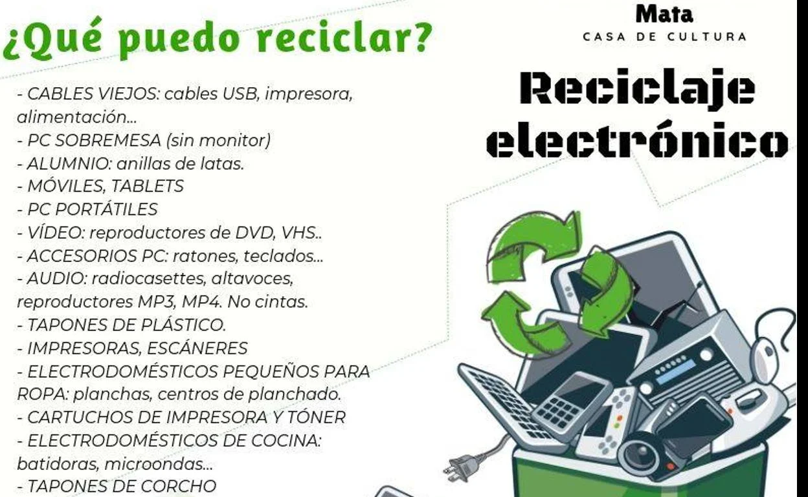

RECICLAJE ELECTRONICO
El reciclaje electrónico es una práctica esencial para reducir el impacto ambiental de los dispositivos tecnológicos que desechamos. Cada año, se generan millones de toneladas de residuos electrónicos en el mundo, y solo una fracción de ellos se recicla adecuadamente.

¿Qué es el reciclaje electrónico?
El reciclaje electrónico consiste en la recolección, desmantelamiento y procesamiento de dispositivos electrónicos en desuso para recuperar materiales valiosos y reducir la contaminación. Los aparatos electrónicos contienen metales preciosos como oro, plata y cobre, además de sustancias tóxicas como plomo y mercurio, que pueden contaminar el suelo y el agua si no se manejan correctamente.
Importancia del reciclaje electrónico
- Reducción de contaminación: Evita que sustancias tóxicas lleguen al medio ambiente.
- Recuperación de materiales: Permite reutilizar metales preciosos y otros componentes.
- Disminución de residuos: Reduce la cantidad de basura electrónica acumulada en vertederos.
- Ahorro de recursos: Disminuye la necesidad de extraer nuevos materiales de la naturaleza.
Opciones para reciclar dispositivos electrónicos
- Reutilización: Antes de desechar un dispositivo, considera repararlo o donarlo.
- Programas de reciclaje: Empresas como Apple y organizaciones como Reciclatrón en México ofrecen opciones para reciclar dispositivos de manera segura.
- Centros de acopio: Existen puntos de recolección especializados para baterías, computadoras y teléfonos móviles.
¿Cómo puedes contribuir?
- Evita el consumo innecesario: Compra solo lo que realmente necesitas.
- Elimina datos personales: Antes de reciclar un dispositivo, borra toda tu información.
- Infórmate sobre programas locales: Busca iniciativas de reciclaje en tu comunidad.

El reciclaje electrónico no solo ayuda al planeta, sino que también fomenta una economía más sostenible.